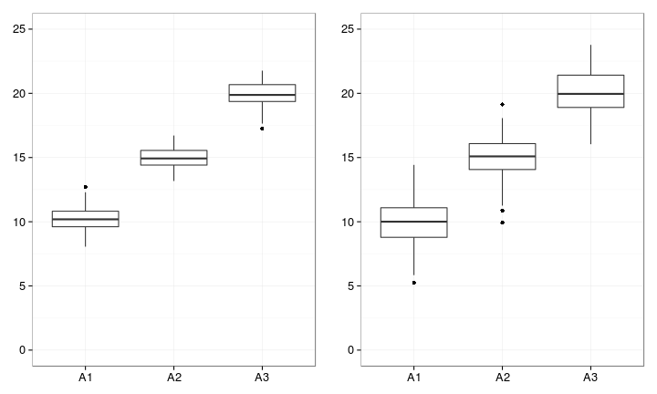
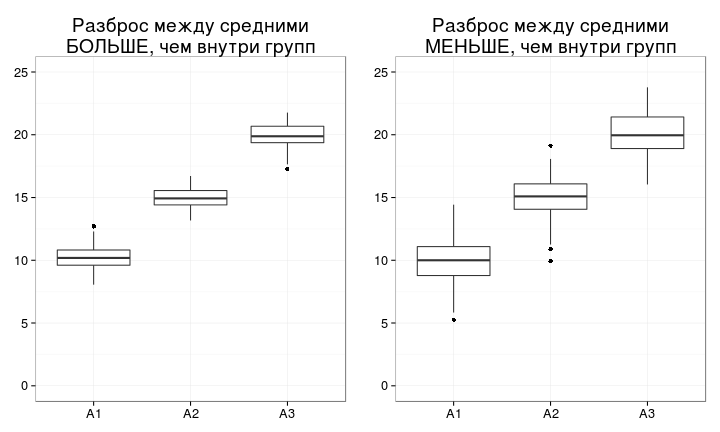
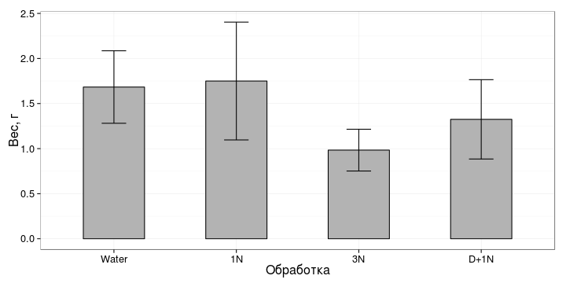
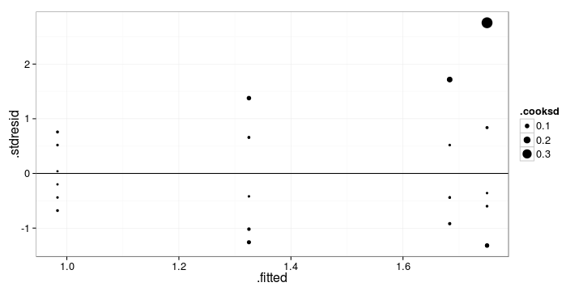

- Опасности множественных сравнений
- Почему можно использовать дисперсии для сравнения средних
- Модель дисперсионного анализа
- Условия применимости дисперсионного анализа
- Post hoc тесты
- Представление результатов дисперсионного анализа
Дисперсионный анализ, часть 1
Математические методы в зоологии - на R, осень 2013
Марина Варфоломеева
Каф. Зоологии беспозвоночных, СПбГУ
Знакомимся дисперсионным анализом
Вы сможете
- Объяснить, в чем опасность множественных сравнений, и как с ними можно бороться
- Рассказать, как в дисперсионном анализе моделируются значения зависимой переменной
- Перечислить и проверить условия применимости дисперсионного анализа
- Интерпретировать и описать результаты, записанные в таблице дисперсионного анализа
- Провести множественные попарные сравнения при помощи post hoc теста Тьюки, представить и описать их результаты
Сеодня нам понадобятся...
# Пакеты
# install.packages(c("reshape", "multcomp"))
library(reshape)
library(multcomp)
library(XLConnect)
library(ggplot2)
# Настраиваем графику
# чтобы кружочки были круглые (в Windows может быть
# не заметно на экране, но при выводе в файл должно работать)
update_geom_defaults("point", list(shape = 19))
# устанавливаем тему и относительный размер шрифта
theme_set(theme_bw(base_size = 16))
Пример: рост корневой системы томатов
tomato <- readWorksheetFromFile(file = "./data/tomato.xlsx", sheet = 1)
# tomato <- read.table(file='./data/tomato.csv', header=TRUE, dec = ',')
tomato
## weight trt
## 1 1.50 Water
## 2 1.90 Water
## 3 1.30 Water
## 4 1.50 Water
## 5 2.40 Water
## 6 1.50 Water
## 7 1.50 1N
## 8 1.20 1N
## 9 1.20 1N
## 10 2.10 1N
## 11 2.90 1N
## 12 1.60 1N
## 13 1.90 D+1N
## 14 1.60 D+1N
## 15 0.80 D+1N
## 16 1.15 D+1N
## 17 0.90 D+1N
## 18 1.60 D+1N
## 19 1.00 3N
## 20 1.20 3N
## 21 1.30 3N
## 22 0.90 3N
## 23 0.70 3N
## 24 0.80 3N
Фактор:
trt- варианты обработки. Уровни фактора:Water- вода,1N- 1 конц. удобрения,3N- 3 конц. удобрения,D+1N- гербицид + 1 конц. удобрения
Зависимая переменная:
weight- вес корневой системы томатов (г)
Данные: Dr Ron Balham, Victoria University of Wellington NZ, 1971 - 1976.
Для красоты на графиках упорядочиваем значения фактора trt
str(tomato)
## 'data.frame': 24 obs. of 2 variables:
## $ weight: num 1.5 1.9 1.3 1.5 2.4 1.5 1.5 1.2 1.2 2.1 ...
## $ trt : chr "Water" "Water" "Water" "Water" ...
tomato$trt <- factor(tomato$trt) # Если вы открывали из xls
levels(tomato$trt) # уровни фактора
## [1] "1N" "3N" "D+1N" "Water"
# Хотим, чтобы первым был уровень "Water"
tomato$trt <- relevel(tomato$trt, ref = "Water")
str(tomato) # проверяем, что получилось
## 'data.frame': 24 obs. of 2 variables:
## $ weight: num 1.5 1.9 1.3 1.5 2.4 1.5 1.5 1.2 1.2 2.1 ...
## $ trt : Factor w/ 4 levels "Water","1N","3N",..: 1 1 1 1 1 1 2 2 2 2 ...
В каких условиях корневая система лучше развивалась?
tom_p <- ggplot(data = tomato, aes(x = trt, y = weight)) +
labs(x = "Обработка", y = "Вес, г")
tom_p + geom_boxplot()

Как мы можем это посчитать?
Опасности множественных сравнений
Попарные сравнения средних
2 группы - 1 сравнение
$\alpha _{для\ сравнения} = 0.05$
4 группы - 6 сравнений
$\alpha _{для\ сравнения} = 0.05$
А для группы из 6 сравнений?
- $\alpha _{для\ группы\ сравнений} = 0.05 \cdot 6 = 0.3$
- Опасно! Случайно найдем различия там, где их нет!
Что делать, если нужно много сравнений?
1. Можно снизить $\alpha _{для\ сравнения}$
$\alpha _{для\ группы\ сравнений} = \alpha _{для\ сравнения} \cdot n$
Хотим зафиксировать $\alpha _{для\ группы\ сравнений} = 0.05$
Поправка Бонферрони:
$\alpha _{для\ сравнения} = \frac{\alpha _{для\ группы\ сравнений}}{n}$для 4 групп, 6 сравнений, $\alpha _{для\ сравнения} = 0.008$
Очень жесткий критерий!
Дисперсионный анализ
Вместо множественных сравнений
без потери мощности
Почему для сравнений средних можно использовать дисперсии?
Где различия убедительнее?

Сравним разброс значений внутри групп и между групповыми средними

Можно проверить при помощи F-критерия
Модель дисперсионного анализа
Модель дисперсионного анализа
## weight trt
## 1 1.50 Water
## 2 1.90 Water
## 3 1.30 Water
## 4 1.50 Water
## 5 2.40 Water
## 6 1.50 Water
## 7 1.50 1N
## 8 1.20 1N
## 9 1.20 1N
## 10 2.10 1N
## 11 2.90 1N
## 12 1.60 1N
## 13 1.90 D+1N
## 14 1.60 D+1N
## 15 0.80 D+1N
## 16 1.15 D+1N
## 17 0.90 D+1N
## 18 1.60 D+1N
## 19 1.00 3N
## 20 1.20 3N
## 21 1.30 3N
## 22 0.90 3N
## 23 0.70 3N
## 24 0.80 3N
$$y _{ij} = \mu + a _i + \epsilon _{ij}$$
| Градации фактора | Общее среднее | Эффект фактора | Случайная изменчивость |
|---|---|---|---|
| Water | $$\mu$$ | $$a _1$$ | $\epsilon _{1}$, $\epsilon _{2}$, ..., $\epsilon _{6}$ |
| 1N | $$\mu$$ | $$a _2$$ | $\epsilon _{7}$, $\epsilon _{8}$, ..., $\epsilon _{12}$ |
| 3N | $$\mu$$ | $$a _3$$ | $\epsilon _{13}$, $\epsilon _{14}$, ..., $\epsilon _{18}$ |
| D+1N | $$\mu$$ | $$a _4$$ | $\epsilon _{19}$, $\epsilon _{20}$, ..., $\epsilon _{24}$ |
Структура общей изменчивости
Общая изменчивость (SSt) = Факторная (SSx) + Случайная (SSe)

- Если выборки из одной совокупности,
Факторная изменчивость = Случайная изменчивость
Таблица дисперсионного анализа
| Источник изменчивости | Суммы квадратов отклонений, SS |
Число степеней свободы, df |
Средний квадрат отклонений (дисперсия), MS |
F |
|---|---|---|---|---|
| Название фактора | $$SS _x = \sum{(\bar x - \hat x _i)^2}$$ | $$df _x = a - 1$$ | $$MS _x = \frac{SS _x}{df _x}$$ | $$F _{df _r, df _e} = \frac{MS _r}{MS _e}$$ |
| Случайная | $$SS _e = \sum{(x _i - \hat x _i)^2}$$ | $$df _e = N - a$$ | $$MS _e = \frac{SS _e}{df _e}$$ | |
| Общая | $$SS _t = \sum {(\bar x - x _i)^2}$$ | $$df _t = N - 1$$ |
Гипотезы:
$H _0: MS _x = MS _e$
$H _1: MS _x ≠ MS _e$
Назовите условия применимости дисперсионного анализа,
если известно, что дисперсионный анализ - линейная модель, как и регрессия.
Условия примененимости дисперсионного анализа,
- Случайность и независимость групп и наблюдений внутри групп
- Нормальное распределение вариант в группах
- Гомогенность дисперсий в группах
Другие ограничения
- Лучше работает, если размеры групп примерно одинаковы
- Устойчив к отклонениям от нормального распределения (при равных объемах групп)
Что же с ростом томатов?
Посмотрим на данные
library(reshape) # есть удобные функции для описания данных
# статистику по столбцам можно получить так:
summarise(tomato, mean = mean(weight), variance = var(weight), sd = sd(weight), n = sum(!is.na(weight)))
## mean variance sd n
## 1 1.44 0.28 0.529 24
Статистика по столбцам и по группам одновременно (n, средние, дисперсии, стандартные отклонения)
tomato_summary <- ddply(tomato, "trt", summarise,
n = sum(!is.na(weight)),
mean = mean(weight),
variance = var(weight),
sd = sd(weight))
tomato_summary # краткое описание данных
## trt n mean variance sd
## 1 Water 6 1.683 0.1617 0.402
## 2 1N 6 1.750 0.4270 0.653
## 3 3N 6 0.983 0.0537 0.232
## 4 D+1N 6 1.325 0.1938 0.440
Этот график нам пригодится для представления результатов
tomato_p_means <- ggplot(tomato_summary, aes(x = trt, y = mean)) +
geom_bar(stat = "identity", fill = "gray70", colour = "black", width = 0.5) +
geom_errorbar(aes(ymin = mean - sd, ymax = mean + sd), width = 0.2) +
labs(x = "Обработка", y = "Вес, г")
tomato_p_means

- Чтобы проверить, какие именно средние отличаются, нужен дисперсионный анализ
Проверяем условия применимости дисперсионного анализа
Нормальность и гомогенность дисперсий - боксплот
ggplot(data = tomato, aes(x = trt, y = weight)) + geom_boxplot()

- Мне не нравится дисперсия в группе "1удобр", проверим ее на графике остатков позже
Cвязь дисперсий и средних (проверка гомогенности дисперсий)
# Данные взяли в кратком описании
ggplot(tomato_summary, aes(x = mean, y = variance)) + geom_point()

- Есть подозрительная группа с большим средним и большой дисперсией, это, скорее всего та же самая "1удобр"
Дисперсионный анализ
tomato_aov <- aov(weight ~ trt, data=tomato)
# summary(tomato_aov)
# Данные для анализа остатков
tomato_diag <- fortify(tomato_aov)
head(tomato_diag)
## weight trt .hat .sigma .cooksd .fitted .resid .stdresid
## 1 1.5 Water 0.167 0.467 0.00965 1.68 -0.183 -0.439
## 2 1.9 Water 0.167 0.466 0.01348 1.68 0.217 0.519
## 3 1.3 Water 0.167 0.459 0.04218 1.68 -0.383 -0.918
## 4 1.5 Water 0.167 0.467 0.00965 1.68 -0.183 -0.439
## 5 2.4 Water 0.167 0.433 0.14743 1.68 0.717 1.717
## 6 1.5 Water 0.167 0.467 0.00965 1.68 -0.183 -0.439
Теперь можно проверить условия применимости на графиках остатков
ggplot(tomato_diag, aes(x = .fitted, y = .stdresid)) + geom_point(aes(size = .cooksd)) + geom_hline(yintercept = 0)

- Один подозрительный томат с самым большим средним - большой остаток
Квантильный график
ggplot(tomato_diag) + geom_point(stat = "qq", aes(sample = .stdresid)) +
geom_abline(yintercept = 0, slope = sd(tomato_diag$.stdresid))

Таблица дисперсионного анализа
anova(tomato_aov)
## Analysis of Variance Table
##
## Response: weight
## Df Sum Sq Mean Sq F value Pr(>F)
## trt 3 2.26 0.754 3.61 0.031 *
## Residuals 20 4.18 0.209
## ---
## Signif. codes: 0 '***' 0.001 '**' 0.01 '*' 0.05 '.' 0.1 ' ' 1
- Дисперсионный анализ показал, что внесение добавок в почву влияет на рост корневой системы томатов ($F _{3, 20} = 3.61$, $p < 0.05$).
Post hoc тесты
Как же проверить какие именно группы отличаются?
Post-hoc тесты
glht()- "general linear hypotheses testing"linfct- гипотеза для тестированияmcp()- функция, чтобы задать множественные сравнения (обычные пост-хоки)trt= "Tukey" - тест Тьюки по факторуtrt
library(multcomp)
tomato_pht <- glht(tomato_aov, linfct = mcp(trt = "Tukey"))
Результаты попарных сравнений при помощи теста Тьюки
summary(tomato_pht)
##
## Simultaneous Tests for General Linear Hypotheses
##
## Multiple Comparisons of Means: Tukey Contrasts
##
##
## Fit: aov(formula = weight ~ trt, data = tomato)
##
## Linear Hypotheses:
## Estimate Std. Error t value Pr(>|t|)
## 1N - Water == 0 0.0667 0.2640 0.25 0.994
## 3N - Water == 0 -0.7000 0.2640 -2.65 0.067 .
## D+1N - Water == 0 -0.3583 0.2640 -1.36 0.539
## 3N - 1N == 0 -0.7667 0.2640 -2.90 0.040 *
## D+1N - 1N == 0 -0.4250 0.2640 -1.61 0.396
## D+1N - 3N == 0 0.3417 0.2640 1.29 0.577
## ---
## Signif. codes: 0 '***' 0.001 '**' 0.01 '*' 0.05 '.' 0.1 ' ' 1
## (Adjusted p values reported -- single-step method)
- Результаты теста Тьюки показали, что рост корневой системы в группе, где помимо удобрений использовали гербицид, не отличался от других групп. При этом достоверные различия были найдены только между группами, где вносили удобрения в разной концентрации (тест Тьюки, $p < 0.05$).
График результатов пост-хок теста.
Буквенные обозначения берем из результатов пост-хок теста. Достоверно различающиеся группы - разными буквами.
tomato_p_anova <- tomato_p_means +
geom_text(aes(y = 0.5, label = c("AB", "A", "B", "AB")), colour = "white", size = 10)
tomato_p_anova

Готовим результаты к представлению
Приводим график в печатный вид
tomato_p_anova +
scale_y_continuous(expand = c(0,0), limit = c(0, 3)) +
scale_x_discrete(labels = c("вода", "1 удобр.", "3 удобр.", "герб.+удобр."))

- вот теперь можно сохранить
Сохраняем таблицу дисперсионного анализа в файл
# Исходная таблица
medley_res <- anova(medley_aov)
# в xls или xlsx с помощью XLConnect
writeWorksheetToFile(data = medley_res, file = "medley_res.xls", sheet = "anova_table")
# в буфер обмена (без доп. настроек только Windows)
write.table(file = "clipboard", x = medley_res, sep = "\t")
Take home messages
- При множественных попарных сравнениях увеличивается вероятность ошибки первого рода. Поправка Бонферрони - способ точно рассчитать, насколько нужно снизить уровень значимости для каждого из сравнений
- При помощи дисперсионного анализа можно проверить гипотезу о равенстве средних значений
- Условия применимости простой линейной регрессии должны выполняться, чтобы
тестировать гипотезы
- Случайность и независимость групп и наблюдений внутри групп
- Нормальное распределение вариант в группах
- Гомогенность дисперсий в группах
- Post hoc тесты - это попарные сравнения после дисперсионного анализа, которые позволяют сказать, какие именно средние различаются
Дополнительные ресурсы
- Quinn, Keough, 2002, pp. 173-207
- Logan, 2010, pp. 254 - 282
- Open Intro to Statistics, pp.236-246
- Sokal, Rohlf, 1995, pp. 179-260
- Zar, 2010, pp. 189-207